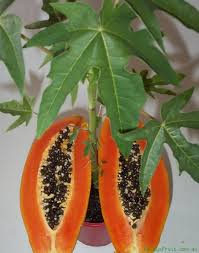

Pawpaws
Introduction
Papaya (Carica papaya) is a perennial fruit tree widely cultivated in tropical and subtropical climates for its nutritive and medicinal values. It is very popular in Kenya where it is grown for both local and export markets. Pawpaw is widely cultivated fruit tree in the tropics and subtropics. It is grown in Kenya as a domestic fruit and small-scale cash crop. The fruits are low in calories and rich in vitamins A, B1, B2 & C, iron and potassium. Papayas enzymes promote digestion easing constipation. Sale of fresh papaya provides regular income for farmers since the fruits are produced through out the year.
Utilization
Pawpaw fruits are sold and eaten locally as fresh fruit, with high demand from the hotels, local grocery, fruit salad vendors, supermarkets and export market. The fruits are dried and exported as part of a dried fruit mixture. It can be used to make ice-cream flavour, refreshing drinks, jam, jelly, wine, marmalade, candies and crystallized fruits. The latex produced by the unripe fruit is harvested and used in the production of papain, used in the brewing industry, canned meats and pharmaceutical industries. Green fruits are pickled or cooked as a vegetable. Young leaves are sometimes eaten as vegetables.
![jam]()
Symptoms
Pawpaws can be affected by pests or they can catch diseases.we all have different problems and diseases.key in your problem in the form on your left to get your solution
Growing PawPaws
Raising Seedlings
Seeds can be sown directly in the field or first raised in nursery beds, in polythene bags, containers etc.
seeds can germinate in two weeks
How to raise seedlings:
- Prepare a seedbed to a fine tilth.
- Drench soil with a mixture of PYRAMID 700WP 100g+LOYALTY 700WDG 10g+ OPTIMIZER 20ml in 20litres of water. This eradicates soil diseases and pests, breaks seed dormancy, encourages uniform germination and supplies nutrients to the young plants.
- Select seeds from a controlled pollination and dry them. The outer layer of the seed coat can be removed.
- Soak seeds in OPTIMIZER 20ml/1l for 30-60minutes to break seed dormancy.
- Place 4-5 seeds in holes, 1cm deep and 15cm apart and cover with a slight layer of soil.
Transplanting
Seedlings are transplanted 4-5 weeks after sowing when they have attained 3-4 leaves or 15-20cm height. While transplanting, careful handling is important in order to avoid disturbing the roots.
Plants grown in a seed bed should first be hardened off
In order to prevent transplanting shock, seedlings should be sprayed with OPTIMIZER 10ml/20l.
- Prepare planting holes 60cm*60cm, 3 meters apart.
- Mix top soil with manure and DAP and fill the holes with the mixture. To improve on nutrient uptake, root development, stimulate plant growth among other benefits, mix manure (1 ton) or fertilizer (50kg) with HUMIPOWER 1kg.
- Plant 3-4 seedlings per hole for varieties with male and female flowers on different plants. Seedlings should be placed at the same depth as they were growing previously.
Newly transplanted seedlings should be watered regularly until they are established.
Cultural practices
Weeding
Weeds are plants growing in undesired places. They compete with the target crop for growth factors like nutrients, sunlight, space and water, as well as harboring pathogens which directly affects performance of the crop.
Spray CLAMPDOWN 480SL 150-300/20l, which is a non-selective herbicide used to control both broadleaved and grass weeds keeping the garden weed-free.
Irrigation
This should be done especially if rainfall is inadequate in order to ensure a steady supply of moisture and especially during flowering and fruiting stages.
Mulching
This helps in suppression of weeds and moisture conservation. Decomposed mulch materials release nutrients into the soil which are absorbed by the plants.
Maturity, Harvesting & Post-Harvest Handling of Papaya
Papaya plants start flowering 5-8 months after planting and fruits are ready for harvesting approximately 2 months after flowering stage. Maturity however depends on the variety. Harvesting is done by cutting off the fruit from the tree.
Note that fruits do not mature at the same time and thus only the mature ones should be harvested.
It is recommended that fruits be harvested just before ripening.
Fruits should be handled carefully to avoid bruises which could create avenues for entry of storage pathogens.
The harvested fruits should be washed in order to remove any substances which could affect its shelf life.
Bruised or fruits with any damages should not be stored together with the good ones.
Ripe fruits are rich in vitamins and other nutritive elements and are commonly used for desserts or processed into other products.
Yields per tree vary from 30 to 150 fruits annually, giving 35 to 50 tons of fruit per ha per year. A papaya plantation can be productive for over 10 years but the economical period is the first 3 to 4 years. It is therefore advisable to renew the plantation every 4 years.
| ** | PESTS | INFO | MANAGEMENT |
|---|---|---|---|
| 1 | Fruitfly | The adults deposit their eggs under the skin of mature and ripening fruit. Some fruit flies lay eggs on green pawpaw, but most of the eggs die due to the latex secreted when fruits are punctured by females while laying eggs. The eggs hatch into maggots which feed on the flesh of the fruit causing it to rot. This may cause fruit fall. | Spray PENTAGON 50EC 10ml/20l or LEXUS 247SC 8ml/20l or PRESENTO 200SP 5g/20l |
| 2 | Red Spider Mites | They suck plant sap and this affects the general performance of the plant, e.g., poor plant growth, leaf drop, production of fruits with blemishes, etc. Severe infestations occur during prolonged dry spells. | Spray ALONZE 50EC 5ml/20l or BAZOOKA 18EC 10ml/20l |
| 3 | Mealy Bugs | They suck sap from tender leaves, petioles and fruits. Severely attacked leaves and fruits drop. They also excrete honey dew on which sooty mold develops. | Spray KINGCODE ELITE 50EC 10ml/20l or PRESENTO 200SP 5g/20l or LOYALTY 700WDG 5g/20l |
| 4 | Thrips | These are sap-sucking insects which attack and puncture shoots, leaves and flower buds as they feed. Severe infestation can cause flower abortion. | Spray ALONZE 50EC 5ml/20l or KINGCODE ELITE 50EC 10ml/20l or DEFENDER 25EC 40ml/20l |
| 5 | WhiteFlies | These are white sap-sucking pests whose infestation causes curling and distortion of leaves and an eventually drop. They are also vectors of viral infections | Spray TAURUS 500SP 10g/20l or LEXUS 247SC 8ml/20l or KINGCODE ELITE 50EC 10ml/20l |
| 6 | Scales | They cause damage by feeding on shoots, leaves and fruits. As they feed, they release honey dew which facilitates the development of sooty mold. | Spray LOYALTY 700WDG 5g/20l or EMERALD 200SL 10ml/20l or PRESENTO 200SP 5g/20l |
| 7 | Nematodes | These are small, microscopic wormlike parasites which feed on the plant roots resulting into formation of galls/swellings. Infestation may cause the plant to topple over due to declined vigour. | Drench soil with ALONZE 50EC 10ml/20l or always mix basal fertilizer (50kg) with ADVENTURE 0.5GR 2kg. |
| 8 | Birds | They feed mostly on the ripe fruits. To prevent this, harvest fruits immediately they attain physiological maturity. | Put a scarecrow |
| ** | DISEASES | ABOUT | MANAGEMENT |
|---|---|---|---|
| 1 | Damping Off | This is a soil borne infection which causes rotting of roots and stems leading to yellowing, leaf and fruit fall and subsequent death and toppling of the plant. | Drench soil with PYRAMID 700WP 100g/20l or CHANCETYL ELITE 800WDG 100g/20l or MILLIONAIRE 690WDG 100g/20l |
| 2 | Papaya Ring spot | This is a viral infection majorly spread by aphids or be mechanically transmitted. Infection causes mottling of leaves and vein clearing. In severe cases, the lobes of the leaves become distorted reducing the life size. On the fruit, dark circles/rings are seen which remain green when the fruit ripens. Severely infected plants do not flower and die young. | Control aphids by spraying KINGCODE ELITE 50EC 10ml/20l or PENTAGON 50EC 10ml/20l or PRESENTO 200SP 5g/20l |
| 3 | Powdery mildew | Plant parts are covered with whitish fungal growth. Infection causes distortion of leaves and shoots. As the fruit develops, the white powder disappears leaving it grey-scared. Premature fruit fall may occur. | Spray RANSOM 600WP 15g/20l or DUCASSE 250EC 20ml/20l or EXEMPO CURVE 250SC 15ml/20l |
| 4 | Anthracnose | Infection is characterized by brown to black sunken lesions on the plant parts. Infected fruits rot. | Spray RANSOM 600WP 15g/20l or DUCASSE 250EC 20ml/20l or ABSOLUTE 375SC 10ml/20l |
| 5 | Bunchy top disease | This is a viral infection spread by leafhoppers whose symptoms include oil streaks on stem, yellowing of upper leaves, bunching and stunting of top leaves and death of plant top. | Control vectors (leafhoppers) with PRESENTO 200SP 5g/20l or KINGCODE ELITE 50EC 10ml/20l or LEXUS 247SC 10ml/20l |
| 6 |
Leaf spot
|
Symptoms starts as small yellow spots which expand. In severe cases, the leaf drops. This greatly affects the performance of the plant. | Spray RANSOM 600WP 15g/20l or DOMAIN 250EC 10ml/20l or EXEMPO CURVE 250SC 15ml/20l |
| 7 | Papaya mosaic | This is a viral disease spread by aphids, which is more serious on young plants. Leaves show symptoms of reduced size, patches of dark-green tissue alternating with yellow-green. Infected plants have reduced growth and fruits develop water soaked lesions with central solid spots. | Control aphids by spraying KINGCODE ELITE 50EC 10ml/20l or PENTAGON 50EC 10ml/20l or LEXUS 247SC 8ml/20l |
| 8 |
Leaf Curl
|
This infection is transmitted by whiteflies and causes curling, crinkling, vein clearing& thickening and deformation of leaves. Defoliation occurs in severe cases. | Control whiteflies with TAURUS 500SP 10g/20l or LEXUS 247SC 8ml/20l or KINGCODE ELITE 50EC 10ml/20l |
| 9 | Phytophthora stem and fruit rot | Infection is characterized by water soaked lesions on unripe fruits and stems. Mature fruits are covered by white fungal growth. | Spray MILLIONAIRE 690WDG 40g/20l or FORTRESS GOLD 720WP 40g/20l or EXEMPO CURVE 250SC 15ml/20l |